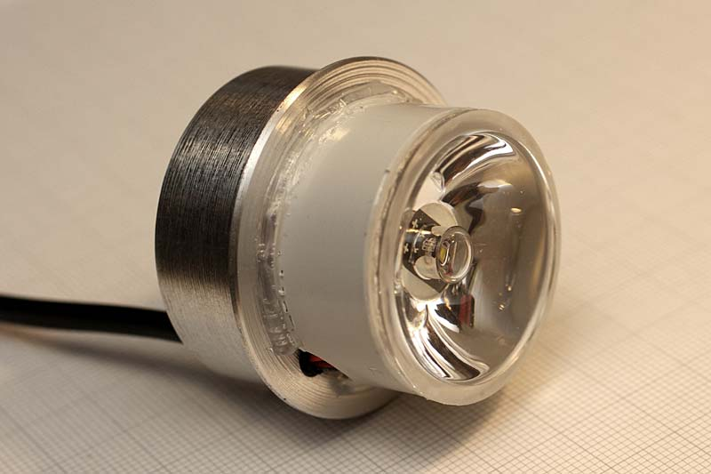
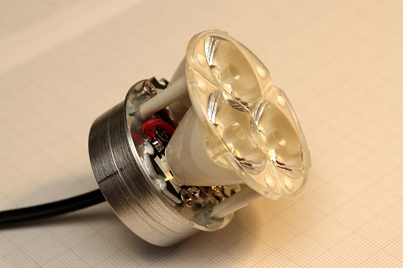
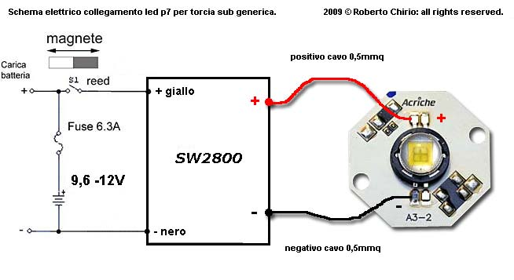
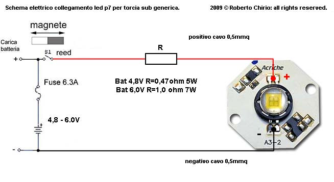
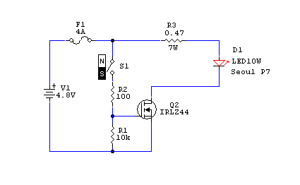
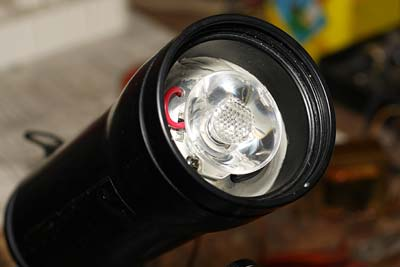

LED & lighting
Kit torch (sub) 1 Power LED 10W
"DIY" by R.Chirio
Page index
Note well!
LED P7 are no longer available, it is still possible to update the illuminator with other types of LEDs, like the CREE XM-L T6 or COB LEDs of various powers.
The procedure for the modification does not change.

Modification for SCUBA torch, use of 1 Cree XM-L2 LED and 8° 35.4mm diam. lens.

Modification for SCUBATICA torch, use of 3 Cree XM-L2 LEDs and triple Fraen lens 10° diameter 50mm
{kind=link}
September 2009
LED underwater torches represent a significant evolution compared to halogen lamp illuminators, light output increases by more than 4-5 times compared to the traditional quartz lamp.
The luminous spectrum of the LEDs towards white blue, facilitates the penetration of light into the water.
Also the low consumption facilitates long immersions as even with small torches easily exceed 60 minutes of good light.
This is the modification of a small torch that originally mounted a 30W halogen lamp.
The optical group has been removed and the original 6V 2500mAh Ni-Cd batteries have also been removed.
Realization
- The group after the modifications, composed of the Led P7 star on aluminum PCB base Acrylic. The connector is used for charging the Ni-Mh battery pack.
- The LED is fastened with two 3MA screws to the center of the aluminum heatsink.
- The heat sink disc, 8-10mm thick, must be cut to the exact diameter, to allow proper insertion inside the torch.
- Secure the heatsink disk with good quality black or gray silicone, this to facilitate heat transfer to the aluminum body of the torch, then into water. You can also use two-component liquid metal.
- The LED must stay as cool as possible. An increase of 30° causes a 10% reduction in luminous flux.
If the temperature exceeds 90° the LED will be destroyed.
{kind=link}
- In the rear of the torch we can fix the batteries.
- In this case 4 SANYO 4500mAh type batteries were used HR-43FAU which turn out to be more reduced compared to the originals.
- The 0.47 ohm 5W resistor was fixed inside, on the back face of the heat sink disk.
{kind=link}
- The finished torch in the charging phase, connected to the excellent ANSMANN mod. ACS110 charger. Suitable for Ni-Mh battery packs from 1 to 10 elements with automatic selection.
- The battery charger is able to signal defective batteries. It is also possible to completely discharge before recharging. (For Ni-Cd batteries)
- The charging times are 5-6 hours.
{kind=link}
Circuit diagram for batteries from 9.6 to 12V

Use of the SW2800 switching regulator (chirio.com), allows stabilizing the LED current value even as the battery discharges, plus having greater runtime, we can count on a constant luminous flux until end of charge.
The original magnetic switch is kept as the steady-state current draw is about 1A, lower than the old halogen lamp.
It is good to put a 6.3AT fuse in series with the accumulators, to protect against short circuits.
The battery charging socket allows us to charge the accumulators without removing them from the container. Just unscrew the front glass.
The P7 LED can be connected with 0.5-0.75mm wire, better to use small diameter flexible cable, ideal if insulated with silicone or Teflon.
Circuit diagram for batteries from 4.8 to 6V

The original magnetic switch is kept as the current draw under steady state is about 2.8A, lower than that of the old halogen lamp. However, verify that the switch can handle 3A.
It is good to put a 6.3AT fuse in series with the accumulators, to protect against short circuits.
The battery charging socket allows us to charge the accumulators without removing them from the container. Just unscrew the front glass and connect the plug.
The LED is connected directly to the battery through a power resistor, which serves as a current limiter. It is good to choose a high-quality resistor, and if aluminum it should be secured to the LED heatsink.
Circuit diagram current amplifier for reed.

The 3 A reed relay is not small, it is possible to use small 100/500mA reed relays by simply amplifying the signal via a logic-level MosFet.
In this case the current passing through the reed is a few mA, all the current of 2800mA passes through the Mosfet thus performing the function of amplified switch.
This circuit is much more efficient and cheaper than using a 5V relay.
- Another torch with the same modification.
- In this case also with Seoul P7 LED, but using the Sekonix 10° lens
- Always used 4 SANYO batteries of 4500mAh type HR-43FAU which turn out to be more reduced compared to the originals.
- The 0.47 ohm 5W resistor was fixed inside, on the rear face of the heatsink disc. As well as the charging socket is internal in the rear part.
- Runtime over 1.5 hours at full light and another hour at reduced light.
- With this lens, the luminous output is greatly in favor of a powerful beam, for long-distance search.

2009© Roberto Chirio: all rights reserved.